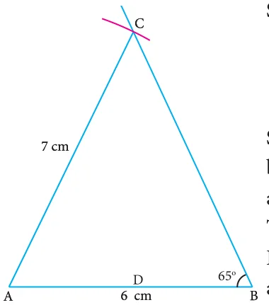
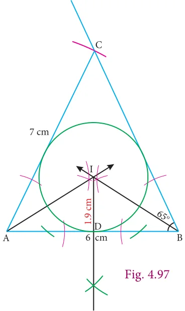
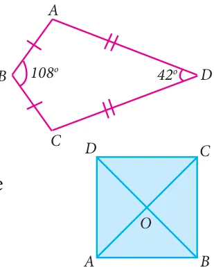

Step 1 : Draw the ΔABC with \(AB = 6cm\), and

\(= 7cm\)

Step 2 : Construct the angle bisectors of any two angles (A and B) and let them meet at I. Then I is the incentre of ΔABC. Draw perpendicular from I to any one of the side (AB) to meet

Step 3: With I as centre and ID as radius draw the circle. This circle touches all the sides of the triangle internally.
Step 4: Measure inradius
In radius \(= 1.9\) cm.

1 Draw a triangle ABC, where \(AB = 8\) cm, \(BC = 6\) cm and \(\angle B = 70°\) and locate its circumcentre and draw the circumcircle. 2 Construct the right triangle PQR whose perpendicular sides are 4.5 cm and 6 cm. Also locate its circumcentre and draw the circumcircle.
- Construct ΔABC with \(AB = 5\) cm \(\angle B = 100°and BC = 6\) cm. Also locate its circumcentre draw circumcircle.
- Construct an isosceles triangle PQR where \(PQ= PR\) and \(\angle Q = 50°\), \(QR = 7cm\). Also draw its circumcircle.
- Draw an equilateral triangle of side 6.5 cm and locate its incentre. Also draw the incircle.
- Draw a right triangle whose hypotenuse is 10 cm and one of the legs is 8 cm. Locate its incentre and also draw the incircle.
- Draw ΔABC given \(AB = 9\) cm, \(\angle CAB = 115 ^{\circ}\) and \(\angle ABC = 40 ^{\circ}\) . Locatge its incentre and also draw the incircle. (Note: You can check from the above examples that the incentre of any triangle is always in its interior).
- Construct ΔABC in which \(AB = BC = 6cm\) and \(\angle B = 80 ^{\circ}\) . Locate its incentre and
draw the incircle.


Multiple Choice Questions
- The exterior angle of a triangle is equal to the sum of two
(1) Exterior angles (2) Interior opposite angles (3) Alternate angles (4) Interior angles
(1) 150° (2) 30° (3) 105° (4) 72°
- In the quadrilateral ABCD, \(AB = BC\) and

- ABCD is a square, diagonals AC and BD meet at O. The number of pairs of congruent triangles with vertex O are (1) 6 (2) 8 (3) 4 (4) 12
- In the given figure CE || DB then the value of x is

\((1) 45 ^{\circ} (2) 30 ^{\circ} (3) 75 ^{\circ} (4) 85 ^{\circ}\)
- The correct statement out of the following is
(1) ΔABC , ΔDEF (2) ΔABC , ΔDEF
(3) ΔABC , ΔFDE (4) ΔABC , ΔFED
- If the diagonal of a rhombus are equal, then the rhombus is a
(1) Parallelogram but not a rectangle (2) Rectangle but not a square (3) Square (4) Parallelogram but not a square